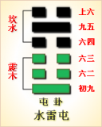

<!DOCTYPE html PUBLIC "-//W3C//DTD XHTML 1.0 Transitional//EN" "http://www.w3.org/TR/xhtml1/DTD/xhtml1-transitional.dtd">

<html xmlns="http://www.w3.org/1999/xhtml">
<head>
<meta content="text/html; charset=utf-8" http-equiv="Content-Type"/>
<title>周易第三卦：屯卦 水雷�?坎上震下原文解释翻译-周易-国学�?/title>
<meta content="周易,屯卦,水雷�?坎上震下" name="keywords"/>
<meta content="周易,屯卦,水雷�?坎上震下，周易第三卦：屯�?水雷�?坎上震下解释翻译�?（水雷屯）坎上震�?《屯》：元亨，利贞。勿用有攸往。利建侯�?初九，磐桓，利居贞。利建侯�?六二，屯如邅如，乘马班如。匪寇，婚媾。女子贞不字，十年乃字�?六三，即鹿无�? name="description"/>
<link href="css.css" media="screen" rel="stylesheet" type="text/css"/>
</head>
<body>
<div class="gxlayout">
</div>
<div class="gxlayout">
<div class="ihead">
<div class="title"><a>周易</a></div>
<ul class="more fl">
<li>当前位置:<a>国学梦首�?/a> &gt; <a>国学经典</a> &gt; <a>经部</a> &gt; <a>四书五经</a> &gt; <a>周易</a> &gt;  周易第三卦：屯卦 水雷�?坎上震下原文解释翻译</li>
</ul>
</div>
<div class="gxbl fl">
<div class="latitle">

<h1>周易第三卦：屯卦 水雷�?坎上震下</h1>
<div class="lainfo"><span>作者：佚名</span> <span>全集�?a>周易</a></span> <span>来源：网�?/span> <span>[<a rel="nofollow" target="_blank">挑错/完善</a>]</span></div>
</div>
<div class="lacontent">
<div class="clearfix"></div>
<p style="text-align:center"></p>
<p style="text-align:center"><a>周易第三卦详�?/a></p>
<p style="text-align:center"><a>第三卦初九爻详解</a>　<a>第三卦六二爻详解</a>　<a>第三卦六三爻详解</a></p>
<p style="text-align:center"><a>第三卦六四爻详解</a>　<a>第三卦九五爻详解</a>　<a>第三卦上六爻详解</a></p>
<p><strong><a target="_blank">周易</a>第三卦屯 水雷�?坎上震下</strong></p>
<p>屯：元，亨，利，贞，勿用，有攸往，利建侯�?/p>
<p>彖曰：屯，刚柔始交而难生，动乎险中，大亨贞。雷雨之动满盈，天造草昧，宜建侯�?不宁�?/p>
<p>象曰：云，雷，屯;君子以经纶�?/p>
<p>初九：磐�?利居贞，利建侯。象曰：虽磐桓，�?行正也。以贵下贱，大得民也�?/p>
<p>六二：屯�?辶颤)如，乘马班如。匪寇婚媾，女子贞不字，十年乃字。象曰：六二之难，乘 刚也。十年乃字，反常也�?/p>
<p>六三：既鹿无虞，惟入于林中，君子几不如舍，往吝。象曰：既鹿无虞，以纵禽也。君 子舍之，往吝穷也�?/p>
<p>六四：乘马班如，求婚媾，无不利。象曰：求而往，明也�?/p>
<p>九五：屯其膏，小贞吉，大贞凶。象曰：屯其膏，施未光也�?/p>
<p>上六：乘马班如，泣血涟如。象曰：泣血涟如，何可长也�?/p>
<p><strong><a href="03_屯卦.html" target="_blank">屯卦</a>卦象，水雷屯卦的象征意义</strong></p>
<p><strong>屯卦是六十四卦的第三卦：屯，水雷屯卦的具体象征意义有哪些�?</strong></p>
<p>屯卦是异卦相叠，下卦为震，上卦为坎。震为雷，喻指动;坎为雨，为水，为<a target="_blank">月亮</a>，象征着陷、险。震雷动能鼓动发育万物，坎水可滋养润化万物，春雷萌动万物始生。下卦为震而上卦为险，象征内欲动而险在外，喻指事物初生时会遇到艰难险阻，然而顺应时运突破艰难的万物必欣欣向荣，�?a target="_blank">取名</a>为“屯”�?/p>
<p>�?a target="_blank">易经</a>》之中每一卦都是一种象征，都代表着很多具体的意义。乾象征天，坤象征地，乾象征父，坤象征母，等等。乾坤二卦被称为父母卦，二卦的交相变化产生宇宙间的万事万物，而屯卦做为第三卦，它就象征了事物的开始�?/p>
<p>《序卦》中说道：“盈天地之间者唯万物，故受之以屯。屯者，盈也;屯者，物之始生也。”充满天地之间的就是万物，所以接着出现的是屯卦。屯是盈满的意思，也是万物开始出生的意思�?/p>
<p>从字形上认识，“屯”就像由地下屈曲初生出来的芽，尚未申张开来，尤如草木萌芽的样子。就卦形而言，以卦中二阳爻讲是将“临”卦二、五之爻相易，从四阴爻看将“观”卦初、上之爻相易，这均为其中一爻交换即“屯”卦�?/p>
<p>《象》曰：云雷屯，君子以经纶�?/p>
<p>《象》中指出：屯卦的卦象是震(�?下坎(�?上，为雷上有水之表象，水在上表示雨尚未落，故释为云。云雷大作，是即将下雨的征兆，故屯卦象征初生。这里表示天地初创，国家始建，正人君子应以全部才智投入到创建国家的事业中去�?/p>
<p>屯卦为难进之象，象征着起始阶段的艰难，也就是“万事开头难”。从卦象上看，这是因上卦为坎，坎代表着艰险、凶险。下卦想前行，但是受�?a href="29_坎卦.html" target="_blank">坎卦</a>的阻拦，要在艰难之中行进。本卦属于下下卦。《象》中这样评断此卦：风刮乱丝不见头，颠三倒四犯忧愁，慢从款来左顺遂，急促反惹不自由�?/p>
<p>屯卦上卦为坎为水，下卦为震为雷，所以屯卦的整体卦象为水雷屯。也就是说水与雷组合，便是屯卦的象征含义。可是“屯”字表示的是幼苗的形象，而卦象却是水与雷，这之间有什么联系呢?原来，坎在上，代表云，震在下，代表雷，乌云出现了，又出现了雷声，自然就会下雨了。只有下雨，地上的植物才能够生长，幼苗才能够有长成的希望。可见“屯”这个卦名与�?a target="_blank">�?/a>之间是珠联璧合结合的十分巧妙�?/p>
<p>屯卦之象：一人在盼望，有一竹竿立，谓望见不顾安�?车在泥中不能转动，犬头上有一回字，表示哭�?一人射文书，占财意;刀在牛上，为角�?一合子，意为和合。这是龙居浅水之卦，万物如生之象�?/p>
<p>关键词：周易,屯卦,水雷�?坎上震下</p>
<div class="clearfix"></div>
<div class="title"><div class="thot">解释翻译</div><span>[挑错/完善]</span></div><p><a href="03_屯卦.html" target="_blank">屯卦</a>：大吉大利，吉祥的占卜。出门不利。有利于建国封侯�?/p>
<p>初九：徘徊难行。占问安居而得到吉利的征兆。有利于建国封侯�?/p>
<p>六二：想前进又难于前进，乘着马车在原地回旋。这不是强盗前来抢劫，而是来求婚。占卜的结果是这个女子不能怀孕，十年之后才能生育�?/p>
<p>六三;追捕康鹿时没有熟悉山林的人当向导，正在想进入密林中去。君子很机智，认为不如放弃追捕。进入密林很艰难�?/p>
<p>六四：乘着马车在原地回旋，因为是去求婚。前进的结果吉利，没有什么不利�?/p>
<p>九五：把肥肉囤积起来。占问小事吉利，占问大事凶险�?/p>
<p>上六：乘着马车在原地回旋，悲痛得血泪流淌不断�?/p>
<div class="title"><div class="thot">注释出处</div><span>[请记住我�?国学�?www.guoxuemeng.com]</span></div><p>①屯(zhūn)是本卦标题。屯的意思是困难，卦象是表示雨的“坎”和表示雷的“震”相叠加。本卦的内容是讲各种困难的事情�?/p>
<p>②磐(pán) �?huán)：徘徊难行�?/p>
<p>③利居贞：占问安居，得到吉兆�?/p>
<p>④屯如邅(zhān)如：想前进又不前进的样子�?/p>
<p>⑤班如：回旋不前进的样子�?/p>
<p>(6)匪寇：不是强盗�?/p>
<p>(7)字：怀孕�?/p>
<p>(8)即：接近。这里指追逐。鹿：麋 鹿。虞：掌管山林的官，这里指熟悉山林的人�?/p>
<p>(9)惟：思考，想�?/p>
<p>(10)几：当机智的“机”用�?/p>
<p>(11)吝：很艰难�?/p>
<p>(12)屯：当囤积的“囤”用; 膏：肥肉�?/p>
<p>(13)涟如：水波荡漾的样子，这里形容血泪不断地流淌�?/p>
<div class="clearfix"></div>
<div class="contextdhall clearfix">
<ul>
<li>上一篇：<a href="02_坤卦.html">周易第二卦：坤卦 坤为�?坤上坤下</a> </li>
<li>下一篇：<a href="04_蒙卦.html">周易第四卦：蒙卦 山水�?艮上坎下</a> </li>
<li>全   文�?a>周易</a></li>
</ul>
</div>
</div>
<div class="clearfix mt20"></div>
</div>
</div>
<div class="clearfix mt20"></div>
<div class="gxlayout">
</div>
<script>
var _hmt = _hmt || [];
(function() {
  var hm = document.createElement("script");
  hm.src = "https://hm.baidu.com/hm.js?872034ded637616c5cf8e173a446bb0e";
  var s = document.getElementsByTagName("script")[0];
  s.parentNode.insertBefore(hm, s);
})();
</script>
</body>
</html>
